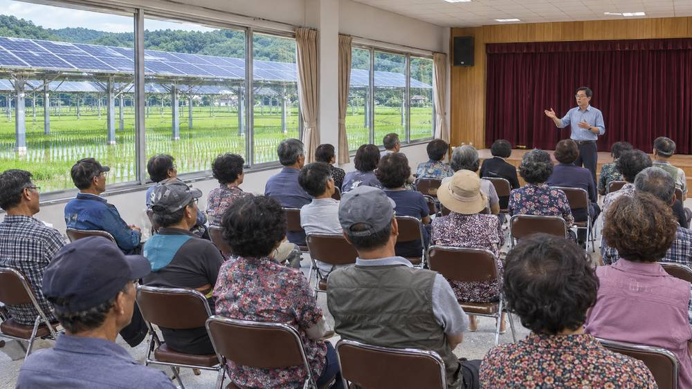

함평 햇빛소득마을·영농형 태양광, 12월 권역 강연 8회

함평군이 12월 1~8일 4개 권역을 돌며 회당 3시간 강의와 상담을 연다. 사업 신청과 관계없이 11월 30일까지 온라인 선착순으로 받는다.
전남 함평군이 12월 1일부터 8일까지 9개 읍·면을 4개 권역으로 나눠 영농형 태양광·햇빛소득마을 강연 '찾아가는 함평아카데미'를 연다. 권역마다 두 번씩 모두 8회이고, 한 번에 강의 2시간과 컨설팅 1시간씩 3시간을 쓴다. 군 인구경제과는 11월 19일 누리집 공지사항에 강연 안내와 읍·면별 일정표가 담긴 웹포스터를 올렸다.
첫 회차는 영농형 태양광, 둘째 회차는 햇빛소득마을을 다루며 기본 설명부터 현황·주요 쟁점·애로사항·우수사례까지 짚는다. 강의는 재단법인 녹색에너지연구원 소속 전문가 2명이 맡는다. 함평군민이면 사업 신청 여부와 관계없이 누구나 들을 수 있고, 회차마다 30~50명 안팎을 받는다. 신청은 11월 30일까지 공지사항 포스터의 QR코드로 선착순 접수하고, 문의는 군 인구경제과 교육지원팀이 받는다.
함평군의회가 11월 17일 예고한 이격거리 조례안은 주택 5호 이상 반경 200m 안 태양광을 막되, 주민소득형 공모사업 선정 설비는 뺐다. 농어업경영체 경영주가 주소지 반경 5㎞ 안에 세우는 태양광과 주민 참여형 설비도 제한을 받지 않는다(예고 기간은 11월 23일까지).
학교·엄다면(3권역)은 12월 1일과 8일 오후 2시부터 5시까지 학나래문화복지센터에서 강연을 듣는다. 나산·해보·월야면(4권역)은 같은 날 오전 9시부터 낮 12시까지 달맞이문화센터 1층 강당에서 열린다. 함평읍·대동면(1권역)은 12월 2일과 7일 오전 9시부터 낮 12시까지 대동휴센터 다목적강당에서 진행한다. 손불·신광면(2권역)은 같은 날 오후 2시부터 5시까지 신광면사무소 2층 대회의실에서 듣는다. 마지막 강연은 12월 8일 3·4권역의 햇빛소득마을 회차다.
시민에너지 관점
햇빛소득마을은 주민이 직접 사업 주체로 나서 수익을 나누는 사업이라, 설명을 들을 기회가 마을 가까이 있어야 한다. 강연 8회에 회차당 최대 50명이면 함평군 인구 2만9,000여 명 가운데 강연 자리는 많아야 400석이다. 군의회 조례안이 주민소득형 공모사업을 거리 제한에서 뺀 만큼, 강연이 끝난 뒤에도 마을별 상담 창구가 이어져야 바깥 사업자보다 주민이 먼저 나설 수 있다. 관심 있는 함평 주민은 11월 30일 마감 전에 신청하자.
출처: 함평군 2026-11-19 공지사항 「영농형 태양광 및 햇빛소득마을의 이해」권역별 찾아가는 함평아카데미 강연 안내(붙임 웹포스터) 원문 보기
출처: 헤럴드경제 2026-11-23 김경민 원문 보기
출처: 함평군의회 2026-11-17 「함평군 재생에너지 발전설비의 이격거리 기준 조례안」 예고(공고 제2026-11호) 원문 보기